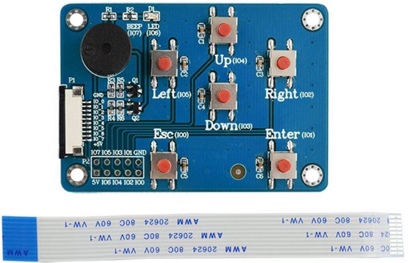
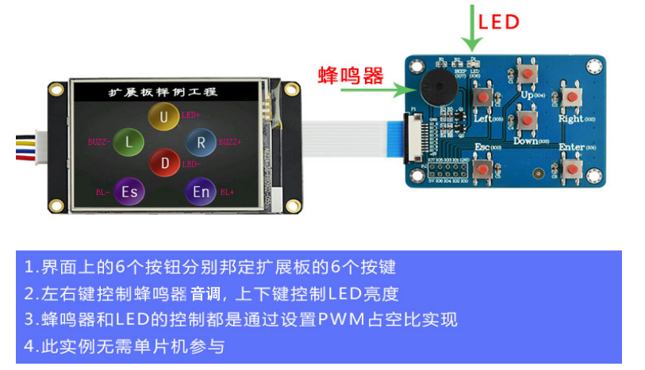
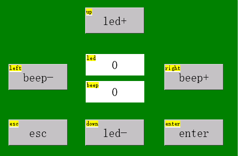
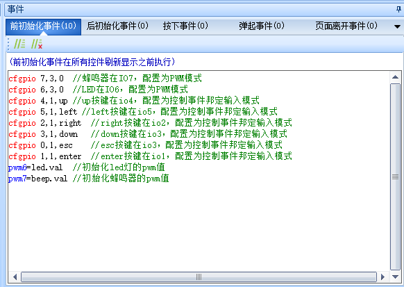
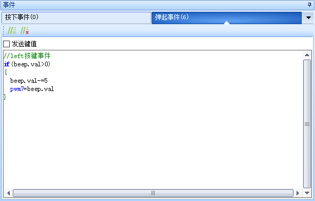
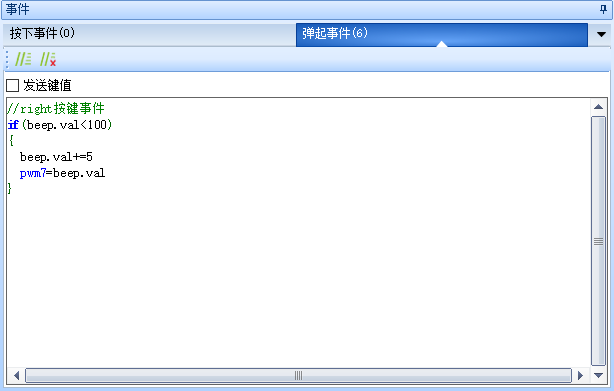
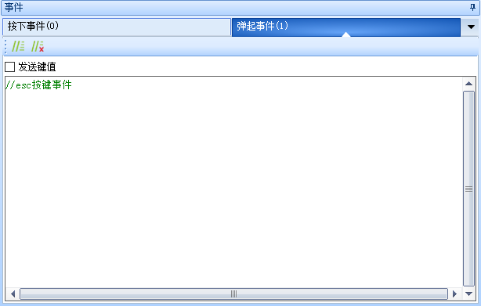
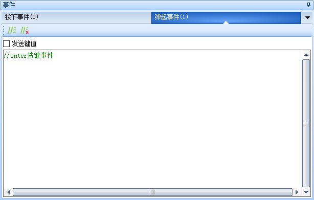
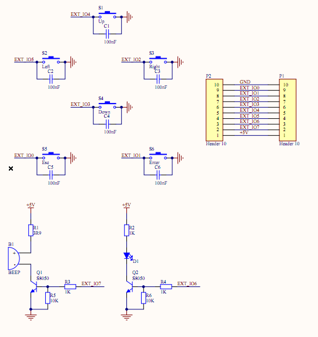

拓展IO资料
拓展IO简介
提示
电脑模拟器上没有外部IO，拓展IO指令只能在真机上测试，不保证在电脑模拟器上的效果。
拓展IO，fpc接口规格是fpc 1.0*10 。
IO口上提供5V电源，但是所有系列拓展IO口电平都是3.3V，如果外部向串口屏IO口输入高电压，也不建议超过3.3V，否则可能会损坏串口屏。
扩展板属于选配开发套件，不是标配配件，如果需要请单独购买，请知晓。您也可以自行设计，请参考 拓展板原理图
- 支持的型号：
x5系列支持8路IO
k0系列支持8路IO
X2系列部分型号支持8路IO(具体是否支持请查看对应型号的规格书) 规格书下载请点击此处访问网址
拓展IO口不支持AD,SPI,I2C等功能,仅支持速率较慢的高低电平输出,按键检测(非矩阵键盘)，以及部分IO口支持PWM
拓展IO只能实现单片机一部分的IO功能(如按键输入,LED,PWM)，如果需要更强大的功能（如旋转编码器），建议使用单片机实现。
K0/X2系列只有io4-io7才支持PWM输出，X5系列只有io7才支持PWM输出 其他IO不支持。配置其他IO为PWM模式会报错。
PWM功能不支持精确控制步进电机，不支持输出精确的脉冲个数，不支持互补输出。
PWM仅建议用于蜂鸣器，风扇调速，LED亮度控制等简单PWM应用。
IO口驱动继电器时，可能驱动能力不足（市面上的继电器大部分都是5V以上的电压驱动，串口屏的IO口电压只有3.3V左右，无法正常驱动继电器），需要自行增加外部电路以增加驱动能力。
使用拓展IO之前需要用cfgpio指令绑定IO口功能，每个需要使用IO口的页面都需要用cfgpio指令重新绑定，参考： cfgpio-扩展IO模式配置
拓展IO作为输入时，建议输入3.3V的电压。如果要输入5V，需要最好串联电阻分压一下，串联至少1K的电阻。

拓展IO简单使用

第一步，在页面中新建数个按钮和数字控件，并修改objname如下所示，其中led和beep是数字控件，其他是按钮控件

第二步，在页面前初始化事件中绑定相关按键并初始化pwm值

在 up 按键中编写如下代码(建议把代码写到弹起事件中,避免首次进入时触发,下同)
在 left 按键中编写如下代码

在right按键中编写如下代码

在down按键中编写如下代码
在esc按键中编写如下代码

在enter按键中编写如下代码

下载到屏幕调试即可
拓展板原理图

sleep睡眠模式与拓展IO
在进入睡眠模式后,拓展IO的某些功能会无法使用,请注意
提示
在进入睡眠模式后,输入相关的功能如上拉输入模式、件事件邦定输入模式是无法使用的,输出相关的功能如推挽输出模式、PWM输出模式、开漏模式
外部IO-样例工程下载
演示工程下载链接：